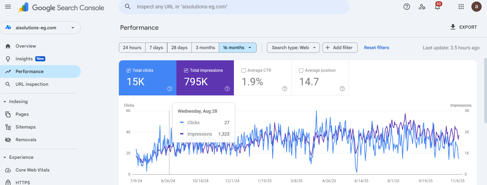

A technical SEO recovery project focused on removing harmful pages, restoring index quality, rebuilding authority, and recovering search visibility.
Impressions
Completed
Spam Pages Removed
Target Market
The website had been compromised and thousands of low-quality spam URLs were indexed by Google.
Search visibility declined significantly due to indexing issues, toxic pages, crawl waste, and technical SEO problems.
The objective was to clean the website, remove harmful content, restore Google's trust, and rebuild search performance.
I audited the website to identify all hacked pages, spam URLs, indexing issues, and technical weaknesses.
Hundreds of harmful URLs were removed, redirected, or deindexed depending on their impact.
The website structure was rebuilt and Search Console monitoring was used to ensure Google reprocessed the site correctly.
Additional work included crawl optimization, metadata cleanup, and technical SEO improvements.
Screenshot showing visibility recovery and search performance improvements.

Technical SEO recovery projects demonstrate how removing spam, repairing website structure, and restoring index quality can bring a website back to sustainable organic growth.
If your website lost rankings, suffered from technical issues, or needs a complete SEO recovery strategy, let's talk.